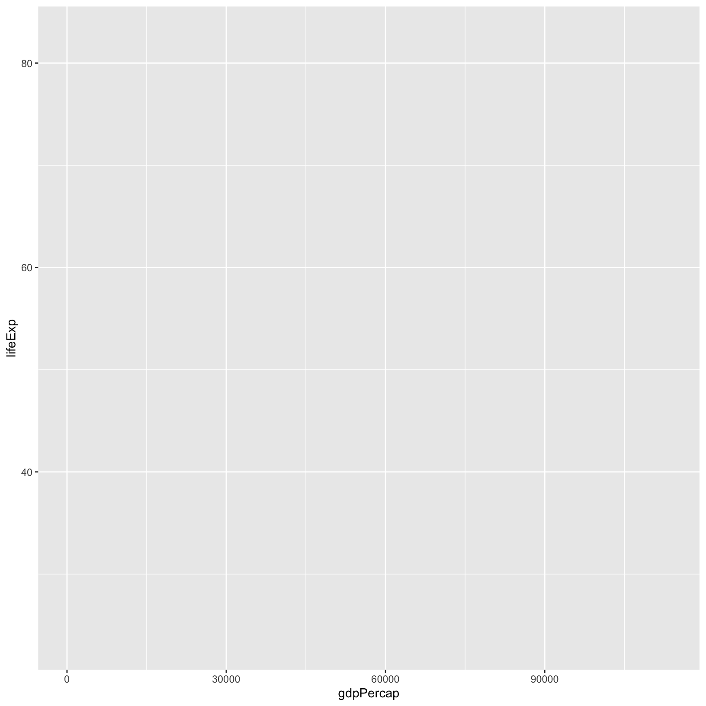
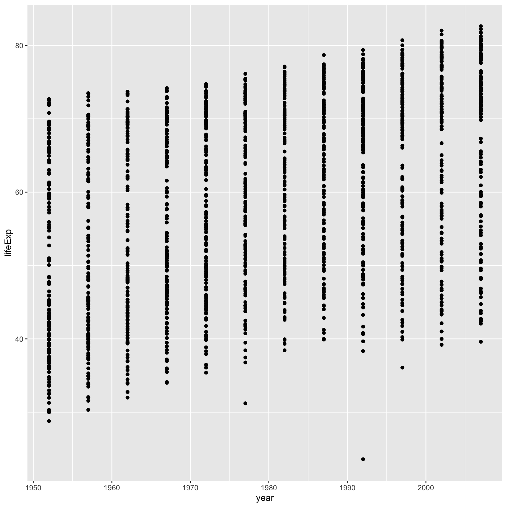
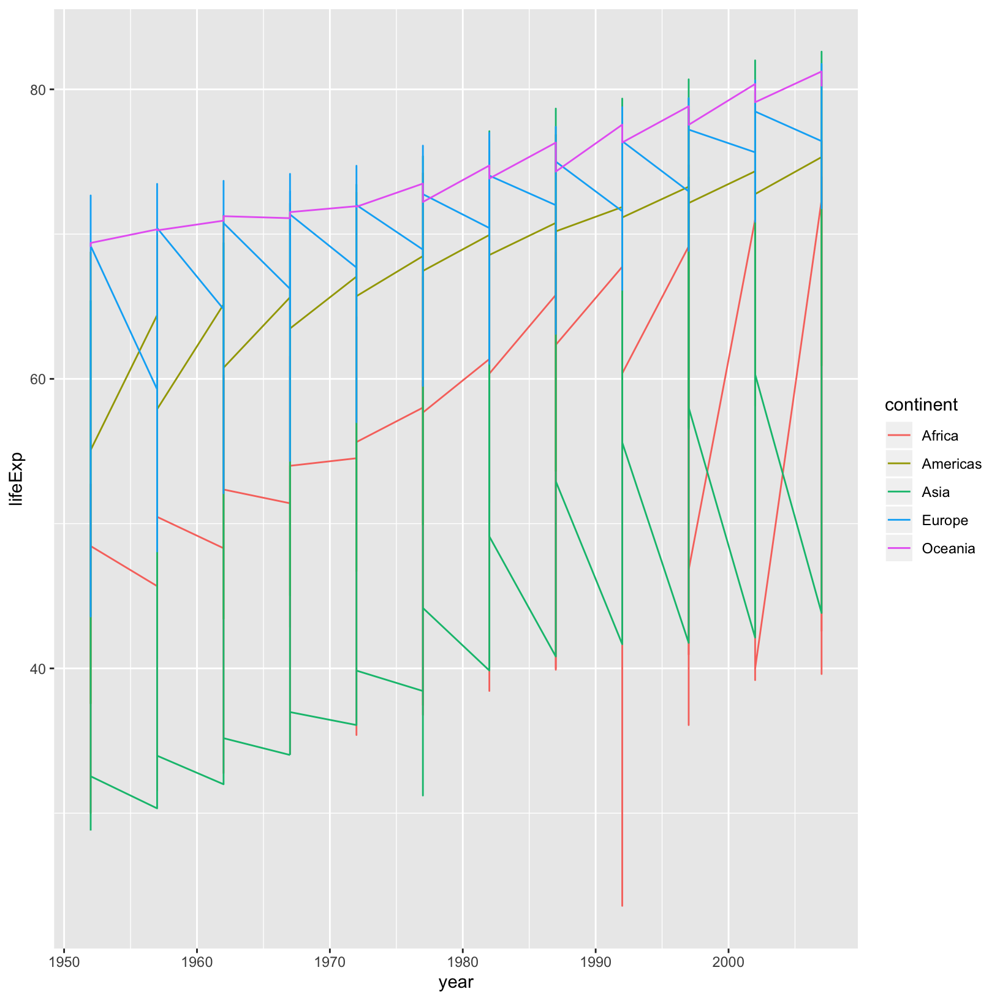
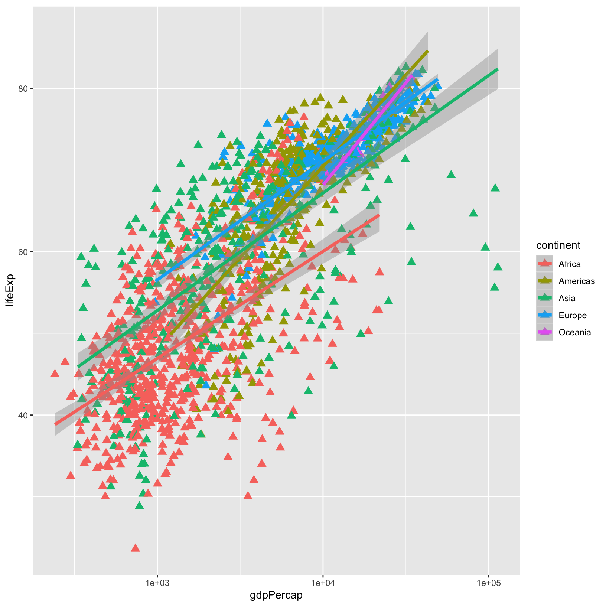
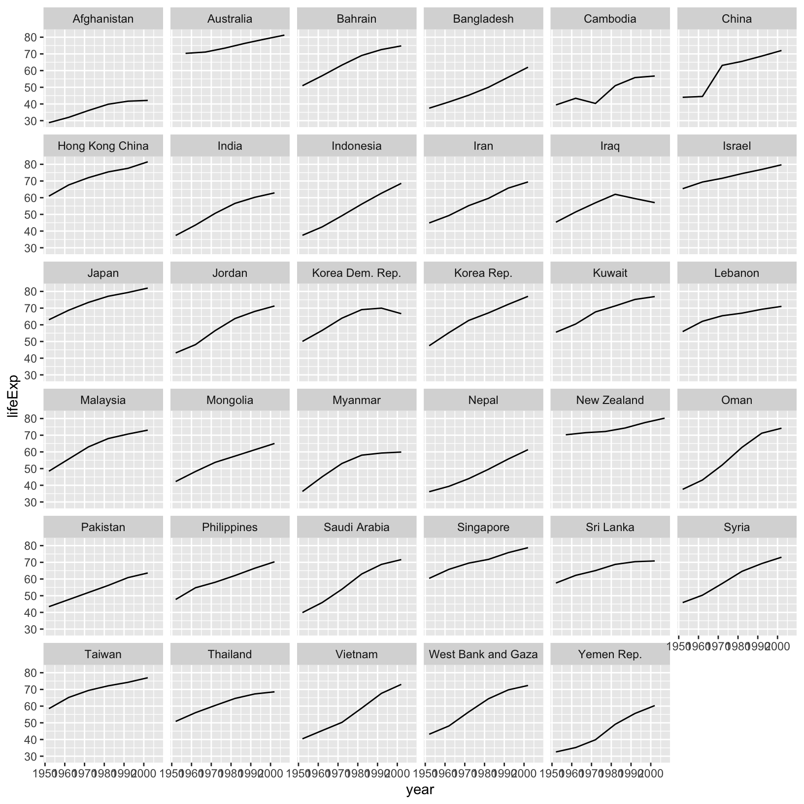
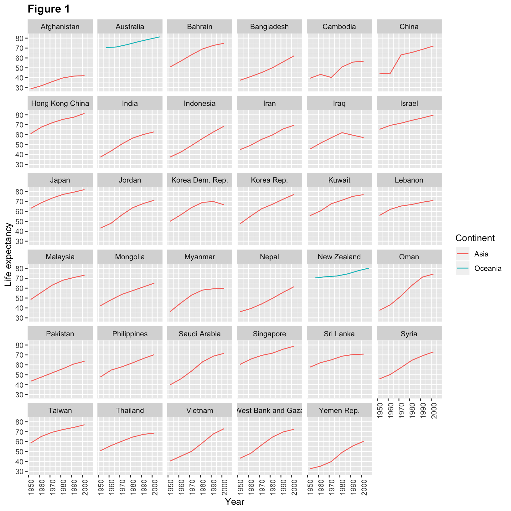
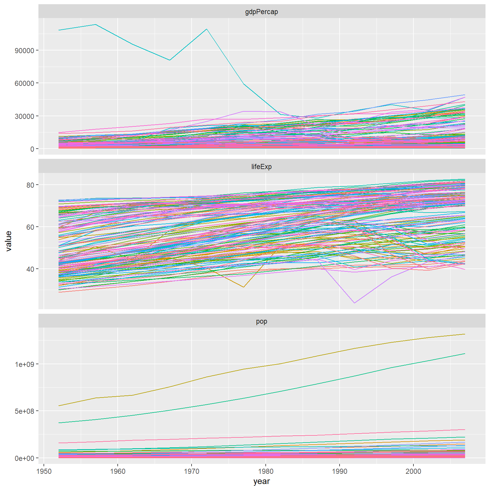

Introduction to Data Science using R Workshop
2019-09-30
Plotting our data is one of the best ways to quickly explore it and the various relationships between variables.
There are three main plotting systems in R, the base plotting system, the lattice package, and the ggplot2 package.
Today we’ll be learning about the ggplot2 package, because it is the most effective for creating publication quality graphics.
ggplot2 is built on the grammar of graphics, the idea that any plot can be expressed from the same set of components: a data set, a coordinate system, and a set of geometric objects or geoms–the visual representation of data points.
The key to understanding ggplot2 is thinking about a figure in layers. This idea may be familiar to you if you have used image editing programs like Photoshop, Illustrator, or Inkscape.
Let’s start off by loading our gapminder data:
# A tibble: 1,704 x 6
country year pop continent lifeExp gdpPercap
<chr> <dbl> <dbl> <chr> <dbl> <dbl>
1 Afghanistan 1952 8425333 Asia 28.8 779.
2 Afghanistan 1957 9240934 Asia 30.3 821.
3 Afghanistan 1962 10267083 Asia 32.0 853.
4 Afghanistan 1967 11537966 Asia 34.0 836.
5 Afghanistan 1972 13079460 Asia 36.1 740.
6 Afghanistan 1977 14880372 Asia 38.4 786.
7 Afghanistan 1982 12881816 Asia 39.9 978.
8 Afghanistan 1987 13867957 Asia 40.8 852.
9 Afghanistan 1992 16317921 Asia 41.7 649.
10 Afghanistan 1997 22227415 Asia 41.8 635.
# ... with 1,694 more rowsAnd jump right in my making an example ggplot2 plot:
library("ggplot2")
ggplot(data = gapminder, mapping = aes(x = gdpPercap, y = lifeExp)) +
geom_point()
So the first thing we do is call the ggplot function. This function lets R
know that we’re creating a new plot, and any of the arguments we give the
ggplot function are the global options for the plot: they apply to all
layers on the plot.
We’ve passed in two arguments to ggplot. First, we tell ggplot what data we
want to show on our figure, in this example the gapminder data we read in
earlier. For the second argument, we passed in the aes function, which
tells ggplot how variables in the data map to aesthetic properties of
the figure, in this case the x and y locations. Here we told ggplot we
want to plot the “gdpPercap” column of the gapminder data frame on the x-axis, and
the “lifeExp” column on the y-axis. Notice that we didn’t need to explicitly
pass aes these columns (e.g. x = gapminder[, "gdpPercap"]), this is because
ggplot is smart enough to know to look in the data for that column!
By itself, the call to ggplot isn’t enough to draw a figure:

We need to tell ggplot how we want to visually represent the data, which we
do by adding a new geom layer. In our example, we used geom_point, which
tells ggplot we want to visually represent the relationship between x and
y as a scatterplot of points:

Recap: Every ggplot2 plot has three key components: (1) data, (2) set of aesthetic mappings between variables in the data and visual properties on the plot, and (3) at least one layer, created with a geom function.
Challenge 1
Modify the example so that the figure shows how life expectancy has changed over time:
Hint: the gapminder dataset has a column called “year”, which should appear on the x-axis.
Solution to challenge 1
Here is one possible solution:

Challenge 2
In the previous examples and challenge we’ve used the
aesfunction to tell the scatterplot geom about the x and y locations of each point. Another aesthetic property we can modify is the point colour. Modify the code from the previous challenge to colour the points by the “continent” column. What trends do you see in the data? Are they what you expected?Solution to challenge 2
In the previous examples and challenge we’ve used the
aesfunction to tell the scatterplot geom about the x and y locations of each point. Another aesthetic property we can modify is the point colour. Modify the code from the previous challenge to colour the points by the “continent” column. What trends do you see in the data? Are they what you expected?
0.1 Layers
Using a scatterplot probably isn’t the best for visualizing change over time.
Instead, let’s tell ggplot to visualize the data as a line plot:

Instead of adding a geom_point layer, we’ve added a geom_line layer, however it looks like the lines are connecting the wrong points? We need to add the group aesthetic, which tells ggplot to draw a line for each country.
ggplot(data = gapminder, mapping = aes(x = year, y = lifeExp, colour = continent, group = country)) +
geom_line()What if we want to visualize both lines and points on the plot? We can simply add another layer to the plot:
ggplot(data = gapminder, mapping = aes(x = year, y = lifeExp, colour = continent, group = country)) +
geom_line() + geom_point()
It’s important to note that each layer is drawn on top of the previous layer. In this example, the points have been drawn on top of the lines. Here’s a demonstration:
ggplot(data = gapminder, mapping = aes(x = year, y = lifeExp, group = country)) +
geom_line(mapping = aes(colour = continent)) + geom_point()
In this example, the aesthetic mapping of colour has been moved from the
global plot options in ggplot to the geom_line layer so it no longer applies
to the points. Now we can clearly see that the points are drawn on top of the
lines.
0.1 Tip: Setting an aesthetic to a value instead of a mapping
So far, we’ve seen how to use an aesthetic (such as colour) as a mapping to a variable in the data. For example, when we use
geom_line(mapping = aes(colour = continent)), ggplot will give a different colour to each continent. But what if we want to change the colour of all lines to blue? You may think thatgeom_line(mapping = aes(colour = "blue"))should work, but it doesn’t. Since we don’t want to create a mapping to a specific variable, we simply move the colour specification outside of theaes()function, like this:geom_line(colour = "blue").
ggplot(data = gapminder, mapping = aes(x = year, y = lifeExp, group = country)) +
geom_line(colour = "blue") + geom_point()
0.1 Challenge 3
Switch the order of the point and line layers from the previous example. What happened?
0.1 Solution to challenge 3
Switch the order of the point and line layers from the previous example. What happened?
ggplot(data = gapminder, mapping = aes(x = year, y = lifeExp, group = country)) + geom_point() + geom_line(mapping = aes(colour = continent))
The lines now get drawn over the points!

0.2 Transformations and statistics
ggplot2 also makes it easy to overlay statistical models over the data. To demonstrate we’ll go back to our first example:

Currently it’s hard to see the relationship between the points due to some strong outliers in GDP per capita. We can change the scale of units on the x axis using the scale functions. These control the mapping between the data values and visual values of an aesthetic. We can also modify the transparency of the points, using the alpha function, which is especially helpful when you have a large amount of data which is very clustered.
ggplot(data = gapminder, mapping = aes(x = gdpPercap, y = lifeExp)) +
geom_point(alpha = 0.5) + scale_x_log10()The log10 function applied a transformation to the values of the gdpPercap
column before rendering them on the plot, so that each multiple of 10 now only
corresponds to an increase in 1 on the transformed scale, e.g. a GDP per capita
of 1,000 is now 3 on the y axis, a value of 10,000 corresponds to 4 on the y
axis and so on. This makes it easier to visualize the spread of data on the
x-axis.
0.2 Tip Reminder: Setting an aesthetic to a value instead of a mapping
Notice that we used
geom_point(alpha = 0.5). As the previous tip mentioned, using a setting outside of theaes()function will cause this value to be used for all points, which is what we want in this case. But just like any other aesthetic setting, alpha can also be mapped to a variable in the data. For example, we can give a different transparency to each continent withgeom_point(mapping = aes(alpha = continent)).
We can fit a simple relationship to the data by adding another layer, geom_smooth:
ggplot(data = gapminder, mapping = aes(x = gdpPercap, y = lifeExp)) +
geom_point() + scale_x_log10() + geom_smooth(method = "lm")
We can make the line thicker by setting the size aesthetic in the
geom_smooth layer:
ggplot(data = gapminder, mapping = aes(x = gdpPercap, y = lifeExp)) +
geom_point() + scale_x_log10() + geom_smooth(method = "lm", size = 1.5)
There are two ways an aesthetic can be specified. Here we set the size
aesthetic by passing it as an argument to geom_smooth. Previously in the
lesson we’ve used the aes function to define a mapping between data
variables and their visual representation.
0.2 Challenge 4a
Modify the colour and size of the points on the point layer in the previous example.
Hint: do not use the
aesfunction.0.2 Solution to challenge 4a
Modify the colour and size of the points on the point layer in the previous example.
Hint: do not use the
aesfunction.
0.2 Challenge 4b
Modify your solution to Challenge 4a so that the points are now a different shape and are coloured by continent with new trendlines. Hint: The colour argument can be used inside the aesthetic.
0.2 Solution to challenge 4b
Modify Challenge 4 so that the points are now a different shape and are coloured by continent with new trendlines.
Hint: The colour argument can be used inside the aesthetic.
ggplot(data = gapminder, mapping = aes(x = gdpPercap, y = lifeExp, colour = continent)) + geom_point(size = 3, shape = 17) + scale_x_log10() + geom_smooth(method = "lm", size = 1.5)
0.3 Multi-panel figures
Earlier we visualized the change in life expectancy over time across all countries in one plot. Alternatively, we can split this out over multiple panels by adding a layer of facet panels.
0.3 Tip
We start by making a subset of data including only countries located in the Americas.
asia_oceania <- gapminder[gapminder$continent == c("Asia", "Oceania"),]
# library(dplyr)
# asia_oceania <- filter(gapminder, continent %in% c("Asia", "Oceania"))
ggplot(data = asia_oceania, mapping = aes(x = year, y = lifeExp)) +
geom_line() +
facet_wrap( ~ country)
The facet_wrap layer took a “formula” as its argument, denoted by the tilde
(~). This tells R to draw a panel for each unique value in the country column
of the gapminder dataset.
0.4 Modifying text
To clean this figure up for a publication we need to change some of the text elements. The x-axis is too cluttered, and the y axis should read “Life expectancy”, rather than the column name in the data frame.
We can do this by adding a couple of different layers. The theme layer
controls the axis text, and overall text size. Labels for the axes, plot
title and any legend can be set using the labs function. Legend titles
are set using the same names we used in the aes specification. Thus below
the colour legend title is set using colour = "Continent", while the title
of a fill legend would be set using fill = "MyTitle".
ggplot(data = asia_oceania, mapping = aes(x = year, y = lifeExp, colour = continent)) +
geom_line() + facet_wrap( ~ country) +
labs(
x = "Year", # x axis title
y = "Life expectancy", # y axis title
title = "Figure 1", # main title of figure
colour = "Continent" # title of legend
) +
theme(axis.text.x = element_text(angle = 90, hjust = 1),
plot.title = element_text(face = "bold"))
0.4 Tip
Note that we apply a “theme” definition to rotate the x-axis labels to maintain readability. Nearly everything in ggplot2 is customizable.
0.5 Exporting the plot
The ggsave() function allows you to export a plot created with ggplot. You can specify the dimension and resolution of your plot by adjusting the appropriate arguments (width, height and dpi) to create high quality graphics for publication. In order to save the plot from above, we first assign it to a variable lifeExp_plot, then tell ggsave to save that plot in png format to a directory called results. (Make sure you have a results/ folder in your working directory.)
lifeExp_plot <- ggplot(data = asia_oceania, mapping = aes(x = year, y = lifeExp, colour = continent)) +
geom_line() + facet_wrap( ~ country) +
labs(
x = "Year", # x axis title
y = "Life expectancy", # y axis title
title = "Figure 1", # main title of figure
colour = "Continent" # title of legend
) +
theme(axis.text.x = element_text(angle = 90, hjust = 1),
plot.title = element_text(face = "bold"))
ggsave(filename = "results/lifeExp.png", plot = lifeExp_plot, width = 18, height = 16, units = "cm")
ggsave(filename = "results/lifeExp_widetv.png", plot = lifeExp_plot, width = 13.33, height = 7.5)There are two nice things about ggsave. First, it defaults to the last plot, so if you omit the plot argument it will automatically save the last plot you created with ggplot. Secondly, it tries to determine the format you want to save your plot in from the file extension you provide for the filename (for example .png or .pdf). If you need to, you can specify the format explicitly in the device argument.
This is a taste of what you can do with ggplot2. RStudio provides a really useful cheat sheet of the different layers available, and more extensive documentation is available on the ggplot2 website. Finally, if you have no idea how to change something, a quick Google search will usually send you to a relevant question and answer on Stack Overflow with reusable code to modify!
0.6 The readr package
Bringing data into R is one of the first places where new users encounter difficulties.
Parsed with column specification:
cols(
country = col_character(),
year = col_double(),
pop = col_double(),
continent = col_character(),
lifeExp = col_double(),
gdpPercap = col_double()
)# A tibble: 1,704 x 6
country year pop continent lifeExp gdpPercap
<chr> <dbl> <dbl> <chr> <dbl> <dbl>
1 Afghanistan 1952 8425333 Asia 28.8 779.
2 Afghanistan 1957 9240934 Asia 30.3 821.
3 Afghanistan 1962 10267083 Asia 32.0 853.
4 Afghanistan 1967 11537966 Asia 34.0 836.
5 Afghanistan 1972 13079460 Asia 36.1 740.
6 Afghanistan 1977 14880372 Asia 38.4 786.
7 Afghanistan 1982 12881816 Asia 39.9 978.
8 Afghanistan 1987 13867957 Asia 40.8 852.
9 Afghanistan 1992 16317921 Asia 41.7 649.
10 Afghanistan 1997 22227415 Asia 41.8 635.
# ... with 1,694 more rowsManipulation of dataframes means many things to many researchers, we often select certain observations (rows) or variables (columns), we often group the data by a certain variable(s), or we even calculate summary statistics. We can do this operations using the normal base R operations:
[1] 7215.327The question here is how might you take averages (or any other summary statistic) by some group you might be interested in.
0.7 The dplyr package
Luckily, the dplyr
package provides a number of very useful functions for manipulating dataframes
in a way that will reduce the above repetition, reduce the probability of making
errors, and probably even save you some typing. As an added bonus, you might
even find the dplyr grammar easier to read.
Here we’re going to cover 5 of the most commonly used functions as well as using
pipes (%>%) to combine them.
select()filter()group_by()summarize()mutate()
If you have have not installed this package earlier, please do so:
Now let’s load the package:
0.8 Using select()
If, for example, we wanted to move forward with only a few of the variables in
our dataframe we could use the select() function. This will keep only the
variables you select.

0.9 Using filter()
To select on some subset of rows:
# A tibble: 360 x 6
country year pop continent lifeExp gdpPercap
<chr> <dbl> <dbl> <chr> <dbl> <dbl>
1 Albania 1952 1282697 Europe 55.2 1601.
2 Albania 1957 1476505 Europe 59.3 1942.
3 Albania 1962 1728137 Europe 64.8 2313.
4 Albania 1967 1984060 Europe 66.2 2760.
5 Albania 1972 2263554 Europe 67.7 3313.
6 Albania 1977 2509048 Europe 68.9 3533.
7 Albania 1982 2780097 Europe 70.4 3631.
8 Albania 1987 3075321 Europe 72 3739.
9 Albania 1992 3326498 Europe 71.6 2497.
10 Albania 1997 3428038 Europe 73.0 3193.
# ... with 350 more rowsIf we open up year_country_gdp we’ll see that it only contains the year,
country and gdpPercap. Above we used ‘normal’ grammar, but the strengths of
dplyr lie in combining several functions using pipes. I’ve found this useful:
## https://twitter.com/WeAreRLadies/status/1172576445794803713 by https://twitter.com/Shel_Kariuki
I work up %>%
showered %>%
dressed %>%
had coffee %>%
came to R workshopSince the pipes grammar is unlike anything we’ve seen in R before, let’s repeat what we’ve done above using pipes.
To help you understand why we wrote that in that way, let’s walk through it step
by step. First we summon the gapminder dataframe and pass it on, using the pipe
symbol %>%, to the next step, which is the select() function. In this case
we don’t specify which data object we use in the select() function since in
gets that from the previous pipe. Fun Fact: There is a good chance you have
encountered pipes before in the shell. In R, a pipe symbol is %>% while in the
shell it is | but the concept is the same!
0.10 Using filter() with pipes
If we now wanted to move forward with the above, but only with European
countries, we can combine select and filter
year_country_gdp_euro <- gapminder %>%
filter(continent == "Europe") %>%
select(year, country, gdpPercap)0.10 Challenge 1
Write a single command (which can span multiple lines and includes pipes) that will produce a dataframe that has the African values for
lifeExp,countryandyear, but not for other Continents. How many rows does your dataframe have and why?0.10 Solution to Challenge 1
As with last time, first we pass the gapminder dataframe to the filter()
function, then we pass the filtered version of the gapminder dataframe to the
select() function. Note: The order of operations is very important in this
case. If we used ‘select’ first, filter would not be able to find the variable
continent since we would have removed it in the previous step.
0.11 Using group_by() and summarize()
Now, we were supposed to be reducing the error prone repetitiveness of what can
be done with base R, but up to now we haven’t done that since we would have to
repeat the above for each continent. Instead of filter(), which will only pass
observations that meet your criteria (in the above: continent=="Europe"), we
can use group_by(), which will essentially use every unique criteria that you
could have used in filter.
# A tibble: 1,704 x 6
country year pop continent lifeExp gdpPercap
<chr> <dbl> <dbl> <chr> <dbl> <dbl>
1 Afghanistan 1952 8425333 Asia 28.8 779.
2 Afghanistan 1957 9240934 Asia 30.3 821.
3 Afghanistan 1962 10267083 Asia 32.0 853.
4 Afghanistan 1967 11537966 Asia 34.0 836.
5 Afghanistan 1972 13079460 Asia 36.1 740.
6 Afghanistan 1977 14880372 Asia 38.4 786.
7 Afghanistan 1982 12881816 Asia 39.9 978.
8 Afghanistan 1987 13867957 Asia 40.8 852.
9 Afghanistan 1992 16317921 Asia 41.7 649.
10 Afghanistan 1997 22227415 Asia 41.8 635.
# ... with 1,694 more rows# A tibble: 1,704 x 6
# Groups: continent [5]
country year pop continent lifeExp gdpPercap
<chr> <dbl> <dbl> <chr> <dbl> <dbl>
1 Afghanistan 1952 8425333 Asia 28.8 779.
2 Afghanistan 1957 9240934 Asia 30.3 821.
3 Afghanistan 1962 10267083 Asia 32.0 853.
4 Afghanistan 1967 11537966 Asia 34.0 836.
5 Afghanistan 1972 13079460 Asia 36.1 740.
6 Afghanistan 1977 14880372 Asia 38.4 786.
7 Afghanistan 1982 12881816 Asia 39.9 978.
8 Afghanistan 1987 13867957 Asia 40.8 852.
9 Afghanistan 1992 16317921 Asia 41.7 649.
10 Afghanistan 1997 22227415 Asia 41.8 635.
# ... with 1,694 more rowsYou will notice that the structure of the dataframe where we used group_by()
(grouped_df) is not the same as the original gapminder (data.frame). A
grouped_df can be thought of as a list where each item in the listis a
data.frame which contains only the rows that correspond to the a particular
value continent (at least in the example above).

0.12 Using summarize()
The above was a bit on the uneventful side but group_by() is much more
exciting in conjunction with summarize(). This will allow us to create new
variable(s) by using functions that repeat for each of the continent-specific
data frames. That is to say, using the group_by() function, we split our
original dataframe into multiple pieces, then we can run functions
(e.g. mean() or sd()) within summarize().
gdp_bycontinents <- gapminder %>%
group_by(continent) %>%
summarize(mean_gdpPercap = mean(gdpPercap))
continent mean_gdpPercap
<fctr> <dbl>
1 Africa 2193.755
2 Americas 7136.110
3 Asia 7902.150
4 Europe 14469.476
5 Oceania 18621.609That allowed us to calculate the mean gdpPercap for each continent, but it gets even better.
0.12 Challenge 2
Calculate the average life expectancy per country. Which has the longest average life expectancy and which has the shortest average life expectancy?
0.12 Solution to Challenge 2
lifeExp_bycountry <- gapminder %>% group_by(country) %>% summarize(mean_lifeExp = mean(lifeExp)) lifeExp_bycountry %>% filter(mean_lifeExp == min(mean_lifeExp) | mean_lifeExp == max(mean_lifeExp))# A tibble: 2 x 2 country mean_lifeExp <chr> <dbl> 1 Iceland 76.5 2 Sierra Leone 36.8Another way to do this is to use the
dplyrfunctionarrange(), which arranges the rows in a data frame according to the order of one or more variables from the data frame. It has similar syntax to other functions from thedplyrpackage. You can usedesc()insidearrange()to sort in descending order.# A tibble: 1 x 2 country mean_lifeExp <chr> <dbl> 1 Sierra Leone 36.8# A tibble: 1 x 2 country mean_lifeExp <chr> <dbl> 1 Iceland 76.5
The function group_by() allows us to group by multiple variables. Let’s group by year and continent.
gdp_bycontinents_byyear <- gapminder %>%
group_by(continent, year) %>%
summarize(mean_gdpPercap = mean(gdpPercap))That is already quite powerful, but it gets even better! You’re not limited to defining 1 new variable in summarize().
0.13 count() and n()
A very common operation is to count the number of observations for each
group. The dplyr package comes with two related functions that help with this.
For instance, if we wanted to check the number of countries included in the
dataset for the year 2002, we can use the count() function. It takes the name
of one or more columns that contain the groups we are interested in, and we can
optionally sort the results in descending order by adding sort=TRUE:
# A tibble: 5 x 2
continent n
<chr> <int>
1 Africa 52
2 Asia 33
3 Europe 30
4 Americas 25
5 Oceania 2If we need to use the number of observations in calculations, the n() function
is useful. It will return the total number of observations in the current group rather than counting the number of observations in each group within a specific column. For instance, if we wanted to get the standard error of the life expectency per continent:
# A tibble: 5 x 2
continent se_le
<chr> <dbl>
1 Africa 0.366
2 Americas 0.540
3 Asia 0.596
4 Europe 0.286
5 Oceania 0.775You can also chain together several summary operations; in this case calculating the minimum, maximum, mean and se of each continent’s per-country life-expectancy:
gapminder %>%
group_by(continent) %>%
summarize(
mean_le = mean(lifeExp),
min_le = min(lifeExp),
max_le = max(lifeExp),
se_le = sd(lifeExp)/sqrt(n()))# A tibble: 5 x 5
continent mean_le min_le max_le se_le
<chr> <dbl> <dbl> <dbl> <dbl>
1 Africa 48.9 23.6 76.4 0.366
2 Americas 64.7 37.6 80.7 0.540
3 Asia 60.1 28.8 82.6 0.596
4 Europe 71.9 43.6 81.8 0.286
5 Oceania 74.3 69.1 81.2 0.7750.14 Using mutate()
We can also create new variables prior to (or even after) summarizing information using mutate().
gdp_pop_bycontinents_byyear <- gapminder %>%
mutate(gdp_billion = gdpPercap*pop/10^9) %>%
group_by(continent,year) %>%
summarize(mean_gdpPercap = mean(gdpPercap),
sd_gdpPercap = sd(gdpPercap),
mean_pop = mean(pop),
sd_pop = sd(pop),
mean_gdp_billion = mean(gdp_billion),
sd_gdp_billion = sd(gdp_billion))0.15 Connect mutate with logical filtering: ifelse
When creating new variables, we can hook this with a logical condition. A simple combination of
mutate() and ifelse() facilitates filtering right where it is needed: in the moment of creating something new.
This easy-to-read statement is a fast and powerful way of discarding certain data (even though the overall dimension
of the data frame will not change) or for updating values depending on this given condition.
## keeping all data but "filtering" after a certain condition
# calculate GDP only for people with a life expectation above 25
gdp_pop_bycontinents_byyear_above25 <- gapminder %>%
mutate(gdp_billion = ifelse(lifeExp > 25, gdpPercap * pop / 10^9, NA)) %>%
group_by(continent, year) %>%
summarize(mean_gdpPercap = mean(gdpPercap),
sd_gdpPercap = sd(gdpPercap),
mean_pop = mean(pop),
sd_pop = sd(pop),
mean_gdp_billion = mean(gdp_billion),
sd_gdp_billion = sd(gdp_billion))
## updating only if certain condition is fullfilled
# for life expectations above 40 years, the gpd to be expected in the future is scaled
gdp_future_bycontinents_byyear_high_lifeExp <- gapminder %>%
mutate(gdp_futureExpectation = ifelse(lifeExp > 40, gdpPercap * 1.5, gdpPercap)) %>%
group_by(continent, year) %>%
summarize(mean_gdpPercap = mean(gdpPercap),
mean_gdpPercap_expected = mean(gdp_futureExpectation))0.16 Combining dplyr and ggplot2
First install and load ggplot2:
In the plotting lesson we looked at how to make a multi-panel figure by adding
a layer of facet panels using ggplot2. Here is the code we used (with some
extra comments):
# Get the start letter of each country
starts.with <- substr(gapminder$country, start = 1, stop = 1)
# Filter countries that start with "A" or "Z"
az.countries <- gapminder[starts.with %in% c("A", "Z"), ]
# Make the plot
ggplot(data = az.countries, aes(x = year, y = lifeExp, color = continent)) +
geom_line() + facet_wrap( ~ country)
This code makes the right plot but it also creates some variables (starts.with
and az.countries) that we might not have any other uses for. Just as we used
%>% to pipe data along a chain of dplyr functions we can use it to pass data
to ggplot(). Because %>% replaces the first argument in a function we don’t
need to specify the data = argument in the ggplot() function. By combining
dplyr and ggplot2 functions we can make the same figure without creating any
new variables or modifying the data.
gapminder %>%
# Get the start letter of each country
mutate(startsWith = substr(country, start = 1, stop = 1)) %>%
# Filter countries that start with "A" or "Z"
filter(startsWith %in% c("A", "Z")) %>%
# Make the plot
ggplot(aes(x = year, y = lifeExp, color = continent)) +
geom_line() +
facet_wrap( ~ country)
Using dplyr functions also helps us simplify things, for example we could
combine the first two steps:
gapminder %>%
# Filter countries that start with "A" or "Z"
filter(substr(country, start = 1, stop = 1) %in% c("A", "Z")) %>%
# Make the plot
ggplot(aes(x = year, y = lifeExp, color = continent)) +
geom_line() +
facet_wrap( ~ country)
0.16 Advanced Challenge
Calculate the average life expectancy in 2002 of 2 randomly selected countries for each continent. Then arrange the continent names in reverse order. Hint: Use the
dplyrfunctionsarrange()andsample_n(), they have similar syntax to other dplyr functions.0.16 Solution to Advanced Challenge
0.17 Other great resources
- R for Data Science
- Data Wrangling Cheat sheet
- Introduction to dplyr
- Data wrangling with R and RStudio
Researchers often want to manipulate their data from the ‘wide’ to the ‘long’ format, or vice-versa. The ‘long’ format is where:
- each column is a variable
- each row is an observation
In the ‘long’ format, you usually have 1 column for the observed variable and the other columns are ID variables.
For the ‘wide’ format each row is often a site/subject/patient and you have
multiple observation variables containing the same type of data. These can be
either repeated observations over time, or observation of multiple variables (or
a mix of both). You may find data input may be simpler or some other
applications may prefer the ‘wide’ format. However, many of R‘s functions have
been designed assuming you have ’long’ format data. This tutorial will help you
efficiently transform your data regardless of original format.

These data formats mainly affect readability. For humans, the wide format is often more intuitive since we can often see more of the data on the screen due to its shape. However, the long format is more machine readable and is closer to the formatting of databases. The ID variables in our dataframes are similar to the fields in a database and observed variables are like the database values.
0.18 Getting started
First install the packages if you haven’t already done so (you probably installed dplyr in the previous lesson):
Load the packages
First, lets look at the structure of our original gapminder dataframe:
Parsed with column specification:
cols(
country = col_character(),
year = col_double(),
pop = col_double(),
continent = col_character(),
lifeExp = col_double(),
gdpPercap = col_double()
)# A tibble: 1,704 x 6
country year pop continent lifeExp gdpPercap
<chr> <dbl> <dbl> <chr> <dbl> <dbl>
1 Afghanistan 1952 8425333 Asia 28.8 779.
2 Afghanistan 1957 9240934 Asia 30.3 821.
3 Afghanistan 1962 10267083 Asia 32.0 853.
4 Afghanistan 1967 11537966 Asia 34.0 836.
5 Afghanistan 1972 13079460 Asia 36.1 740.
6 Afghanistan 1977 14880372 Asia 38.4 786.
7 Afghanistan 1982 12881816 Asia 39.9 978.
8 Afghanistan 1987 13867957 Asia 40.8 852.
9 Afghanistan 1992 16317921 Asia 41.7 649.
10 Afghanistan 1997 22227415 Asia 41.8 635.
# ... with 1,694 more rows0.18 Challenge 1
Is gapminder a purely long, purely wide, or some intermediate format?
0.18 Solution to Challenge 1
The original gapminder data.frame is in an intermediate format. It is not purely long since it had multiple observation variables (
pop,lifeExp,gdpPercap).
Sometimes, as with the gapminder dataset, we have multiple types of observed
data. It is somewhere in between the purely ‘long’ and ‘wide’ data formats. We
have 3 “ID variables” (continent, country, year) and 3 “Observation
variables” (pop,lifeExp,gdpPercap). This intermediate format can be
preferred despite not having ALL observations in 1 column given that all 3
observation variables have different units. There are few operations that would
need us to stretch out this dataframe any longer (i.e. 4 ID variables and 1
Observation variable).
While using many of the functions in R, which are often vector based, you
usually do not want to do mathematical operations on values with different
units. For example, using the purely long format, a single mean for all of the
values of population, life expectancy, and GDP would not be meaningful since it
would return the mean of values with 3 incompatible units. The solution is that
we first manipulate the data either by grouping (see the lesson on dplyr), or
we change the structure of the dataframe. Note: Some plotting functions in
R actually work better in the wide format data.
0.19 Convert long format with gather()
Here we have used piping syntax which is similar to what we were doing in the previous lesson with dplyr. In fact, these are compatible and you can use a mix of tidyr and dplyr functions by piping them together
Inside gather() we first name the new column for the new ID variable and then
the value column taking the country, year and continent variables out
of the gathering process:
Inside spread() we have the opposite situation where we take the vars column and spread
it over to separate columns with value filling those cells:
0.20 Advantage to plotting and tables
Reshaping your data from wide to long provides considerable flexibility for
presenting your results. Combining some dplyr grouping code with tidyr
we can produce a nice table:
gapminder %>%
gather(key = vars, value = value, -country, -year, -continent) %>%
group_by(continent, vars) %>%
summarise(total_pop = sum(value)) %>%
spread(key = continent, value = total_pop)# A tibble: 3 x 6
vars Africa Americas Asia Europe Oceania
<chr> <dbl> <dbl> <dbl> <dbl> <dbl>
1 gdpPercap 1368903. 2140833. 3129252. 5209011. 446919.
2 lifeExp 30492. 19398. 23786. 25885. 1784.
3 pop 6187585961 7351438499 30507333902. 6181115304 212992136 Similarly, gathering can provide considerable more flexibility when plotting by grouping variables we might want to facet:
library(ggplot2)
ggplot(gapminder_long, aes(x = year, y = value, colour = country)) +
geom_line() +
guides(colour = FALSE) +
facet_wrap(~vars, scales = "free_y", ncol = 1)